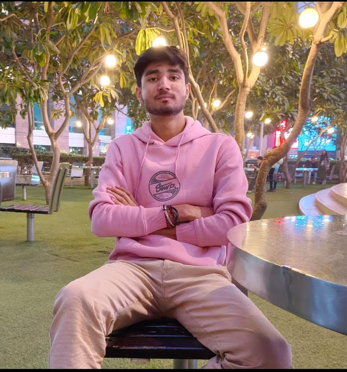

|
 Arjun JhaBTech, Production & and Industrila Engineering National Institute of technology, Kurukshetra |
(+91) 9625945617 arjunjha8010@gmail.com Gurugram, Haryana |
To be a part of a reputed organization where I can utilize my skills and knowledge for the growth and betterment of the company and in return company provides me the opportunity to grow and learn more to enhance my capability and skills.
| Education | College/Institute | Year | Percentage/CGPA |
|---|---|---|---|
| B.Tech | NIT, Kurukshetra | 2022-2026 | 7.00 SGPA (till 3rd sem) |
| Class XII | C.B.S.E VIDYA School, Gurugram | 2021 | 84.6% |
| Class X | C.B.S.E VIDYA School, Gurugram | 2019 | 80.4% |
Soft skills: Communication skills, Problem Solving, Leadership, Time Management
Programming Languages: C, C++, SQL and Python
Tools and Softwares: AutoCAD, VS code, Excel, Word, Canva, Git/GitHub